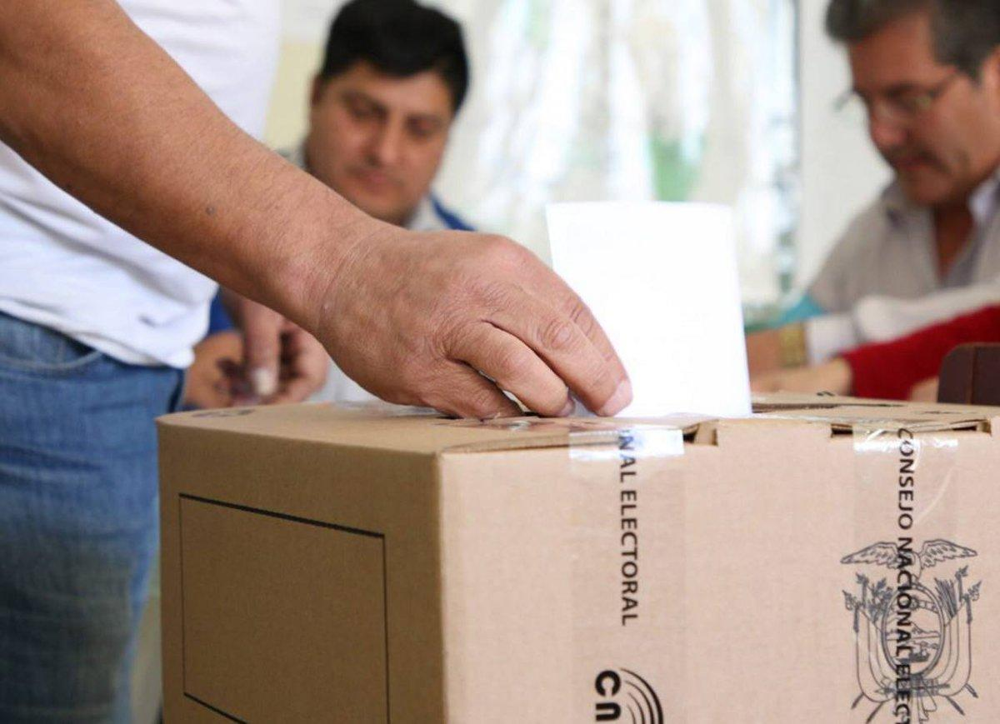

05Una primera miradaa la oferta electoral
En esta ocasión participarán 232 organizaciones políticas, 16% menos que en 2023:
La mayor caída está en lo local. De las organizaciones provinciales, cantonales y parroquiales que compitieron en 2023, 41 no participarán esta vez: casi una de cada seis.
Revolución Ciudadana y el movimiento Amigo no constan entre las organizaciones que participarán, ya que ambos fueron suspendidos temporalmente por decisiones del Tribunal Contencioso Electoral (TCE). A ellos se suman Construye y Unidad Popular, cuyos registros electorales fueron cancelados definitivamente por el CNE.
Un zoom a los candidatos
La disminución de la oferta electoral no se limita a las organizaciones políticas: también hay menos candidatos.
Hasta el 24 de octubre, el CNE registraba 51.658 candidaturas en firme, 16% menos que los 61.850 candidatos que llegaron a la papeleta en 2023.
Fuente: CNE. 2023: candidatos confirmados. 2026: candidaturas en firme al 24 de octubre.
En promedio, cada alcaldía tendrá cerca de seis candidatos, frente a siete en 2023, y cada prefectura poco más de seis, frente a ocho.
Autoridades que buscan la reelección

Prefectos que buscan la reelección
 Fuerza Ciudadana Sucumbiense
Fuerza Ciudadana Sucumbiense* Cambió de organización política respecto a 2023.
Fuente: Estimación propia con base en datos del CNE.
de alcaldes que hoy buscan la reelección ganó en 2023 con menos del 37% de los votos,
y uno de cada tres (33%) lo hizo por menos de 5 puntos.
Muchos alcaldes llegaron al cargo con el voto repartido entre varios rivales. Con menos opciones en la papeleta, queda abierta la pregunta de si el voto volverá a dispersarse.